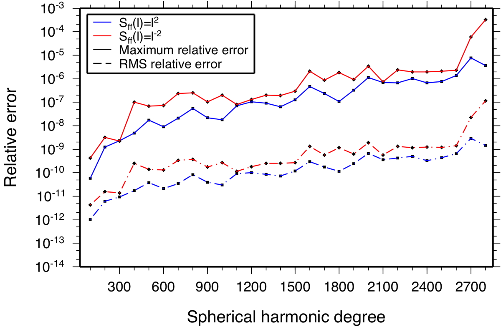

| HOME | DOWNLOAD | DOCUMENTATION | FAQ |
> Home > Documentation
Accuracy
Three different types of algorithms are provided for calculating the spherical harmonic coefficients of a function. SHExpandLSQ performs a least squares inversion given data at arbitrary points on the sphere. This algorithm is slow for large spherical harmonic degrees, but may be desirable in the case where the data are noisy. SHExpandDH and SHExpandDHC perform an expansion using the sampling theorem of Driscoll and Healy (1994, Adv. Applied. Math., 15, 202-250) for real and complex data, respectively. For a bandlimited function that is sampled on N equally spaced points in both longitude and latitude (N being even), this transform is exact if the spherical harmonic bandwidth is less than or equal to N/2-1. SHExpandGLQ and SHExpandGLQC integrate numerically either a real or complex function over each Plm using Gauss-Legendre quadrature, and it is this algorithm that will be discussed in detail below.
The accuracy of the SHExpandGLQ spherical harmonic transform depends upon a number of factors, including:
- Accuracy of the Legendre functions
- Accuracy of the Gauss-Legendre quadrature
- Nature of the data set
- Accumulation of roundoff errors
When using double precision floating point numbers, the standard Legendre functions overflow near spherical harmonic degree 15. Hence, all high-order expansions should make use of the geodesy, orthonormal, or Schmidt semi-normalized functions. It is well known that the standard three-term recursion formula that is utilized in calculating these leads to underflows near the poles for large values of m. To circumvent this problem, the normalized Legendre functions are here calculated using the method presented in Holmes and Featherston (2002, J. Geodesy, 76, 279-299), where the functions are first scaled by 10280 sin θ prior to performing the recursions, and then unscaled at the end of the recursion. This ensures that the initial values of the recursion do not underflow, which would cause the Plms to be equal to 0 for all values of l for a given θ and m. The recursion used is to first calculate Pmm, and then to obtain Plm for all values of l. The scaled portion of this routine does not lose precision and overflow until about degree 2800.
Integration by Gauss-Legendre quadrature is exact when the integrand is a terminating polynomial. The zonal Legendre functions, Pl0, are polynomials of degree l, but the Legendre functions for m>0 are not. Nevertheless, when m+m' is even, the product Plm Pl'm' is a polynomial of order l+l'. The present algorithm makes the assumption that this product is also a polynomial when m+m' is odd. Tests using 20% more Gauss-Legendre integration points than required by this assumption do not give rise to any improvement (utilizing the criterion presented below), indicating that this assumption is valid for all practical purposes.
A set of synthetic spherical harmonic coefficients was created to test the accuracy of this routine. For a given spherical harmonic bandwidth, these coefficients were expanded in the space domain using MakeGridGLQ, and then re-expanded into spherical harmonics using SHExpandGLQ. The maximum and rms relative errors between the initial and final set of coefficients are plotted below in Figure 1 as a function of the bandwidth of the initial function. Two cases are shown. In the first, each coefficient was chosen to be a random Gaussian distributed number with unit variance, and the coefficients were then scaled such that the power spectrum was proportional to l2. In the second, these coefficients were scaled such that the power spectrum was proportional to l-2. This second power spectrum is typical of geophysical observables, such as gravity and topography.
Figure 1. Maximum and rms relative errors of the spherical harmonic coefficients as a function of spherical harmonic bandwidth, following a call to MakeGridGLQ and SHExpandGLQ.
As is seen in the above plot, the errors associated with the transform and inverse pair are negligible to about degree 2600, and then grow somewhat between degrees 2700 and 2800. The errors increase in an quasi-exponential manner, with the maximum relative error being approximately 1 part in a billion for degrees close to 400, and about 1 part in a million for degrees close to 2600. RMS errors for the coefficients as a function of degree l are typically three orders of magnitude smaller than the maximum relative errors. While the errors are slightly larger for the set of coefficients that possessed a "red" power spectrum, the difference between the "red" and "blue" spectra is modest, implying that the form of the data do not strongly affect the accuracy of these routines. Relative errors for the routine SHExpandDH are nearly identical as those from SHExpandGLQ. The errors associated with the complex routines are lower by a few orders of magnitude.
> Home > Documentation
| Laboratoire Lagrange | Observatoire de la Côte d'Azur | © 2016 SHTOOLS |